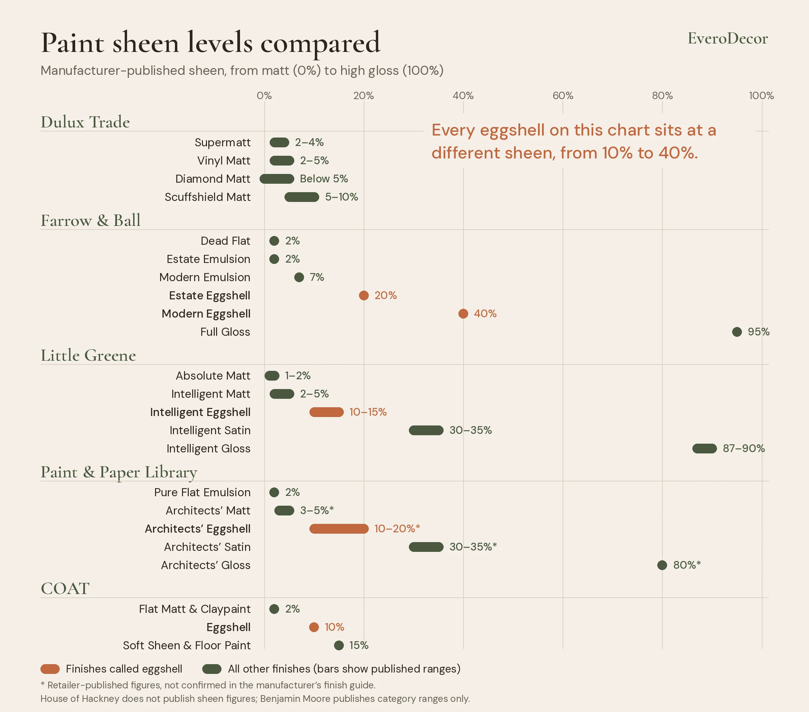
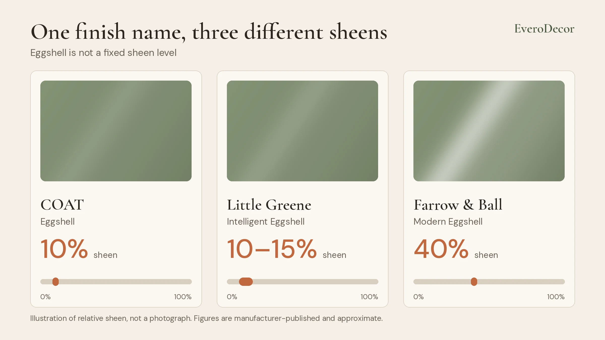
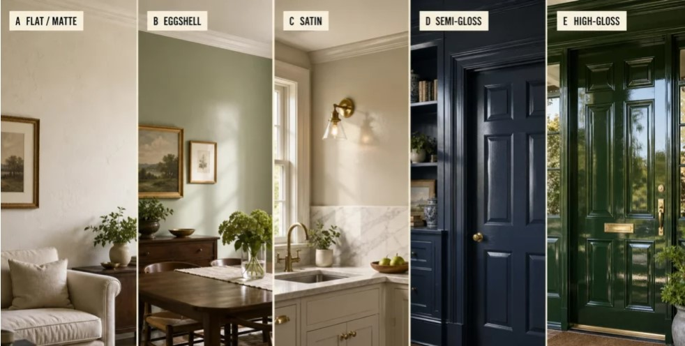

Paint Finishes Explained: Matt, Silk, Eggshell & Dead Flat
Discover the differences between mainstream and designer paint finishes, from traditional Matt, Silk and Satin to Dead Flat, Estate Emulsion and Eggshell. Explore sheen percentages, surface reflectivity and the characteristics that distinguish each finish.

Mainstream brands such as Dulux, Valspar and Crown use familiar terms: Matt, Super Matt, Silk, Soft Sheen, Satin and Gloss. Premium and designer brands such as Farrow & Ball, Little Greene and Benjamin Moore use names like Dead Flat, Estate Emulsion, Intelligent Eggshell and Absolute Matt. Many of these describe similar levels of reflectivity. So is Dead Flat just another name for Matt? Is Eggshell the same as Satin? And how much light does each finish reflect?
Paint sheen levels explained: what does the percentage mean?
Sheen is the amount of light a painted surface reflects. Low-sheen paint absorbs and diffuses light for a flatter, softer look. High-sheen paint reflects more light for a brighter, more polished look.
- 2%: extremely flat, almost non-reflective.
- 5%: very matt, with minimal reflection.
- 15%: a subtle, soft sheen.
- 30%: a noticeable satin-like appearance.
- 40%: a more pronounced reflective finish.
- 90%: a highly reflective gloss.
These percentages are manufacturer-specific measurements, not a universal conversion system.

Dulux and Valspar paint finishes: standard finishes
Mainstream manufacturers use straightforward terms, and their paints are widely available at DIY retailers and trade decorating centres.
Matt and Super Matt
Matt is one of the most popular finishes for interior walls and ceilings. Its low-reflective surface helps hide minor imperfections, and Super Matt takes that further. Dulux Trade publishes Supermatt at roughly 2–4%, Vinyl Matt at 2–5%, Diamond Matt below 5% and Scuffshield Matt at 5–10%, so even within one brand’s matt range reflectivity varies.
Silk and Soft Sheen
Silk and Soft Sheen reflect more light than traditional matt emulsion and suit walls where a more practical surface is wanted. Valspar’s wall range includes Matt, Mid-Sheen, Silk and Soft-Sheen (for kitchens and bathrooms), with Eggshell, Satin and High Gloss for woodwork. Silk and Soft Sheen are product descriptions, not identical sheen levels; the exact figure depends on the formulation.
Satin and Gloss
Satin and Gloss are traditionally used on doors, skirting boards, window frames and furniture. Satin is a noticeable but subtle sheen, while Gloss is much brighter and more polished. Dulux and Valspar both offer them across their wood and metal ranges.
Farrow & Ball, Little Greene and Benjamin Moore paint finishes
Designer brands tie their finishes to particular looks, textures and decorating styles.
Farrow & Ball paint finishes
Dead Flat and Estate Emulsion are both around 2% sheen but are not interchangeable: Estate Emulsion is the signature chalky matt for walls and ceilings, while Dead Flat is a more versatile, durable finish for several interior surfaces. Modern Emulsion (about 7%) is slightly more reflective and designed for kitchens, bathrooms and busy living spaces. Estate Eggshell is about 20% and Modern Eggshell about 40%, so two finishes with the same word in the name look noticeably different. Full Gloss is about 95%.
Little Greene paint finishes
Little Greene offers Absolute Matt, Intelligent Matt, Intelligent Eggshell, Intelligent Satin and Intelligent Gloss. Absolute Matt (1–2%) gives a very flat decorative look, while Intelligent Matt (2–5%) has a similarly low sheen with greater washability. Intelligent Eggshell (10–15%) is a low-sheen option for woodwork and other surfaces that need durability.
Benjamin Moore sheen levels
Benjamin Moore uses Flat, Matte, Eggshell, Pearl, Satin and High Gloss. Its published classifications are broad ranges rather than single-product figures, and it notes that sheen can be measured at different angles depending on the finish, which matters when comparing specifications.
Paint & Paper Library, COAT and House of Hackney finishes
Paint & Paper Library
Paint & Paper Library combines an ultra-flat emulsion with durable multi-surface coatings. Pure Flat Emulsion (2%) is essentially a Dead Flat finish, while Architects’ Matt is the more practical, washable alternative. The Architects’ figures in the table below come from a specialist retailer rather than the manufacturer’s finish guide, so treat them as indicative.
COAT Paints
COAT mixes contemporary and traditional terms: Flat Matt, Soft Sheen, Eggshell and Claypaint. Its own product guide lists Flat Matt and Flat Matt Claypaint at 2% (“Dead Matt”), Eggshell at 10% (“Matt”), and Soft Sheen and Floor Paint at 15% (“Matt-ish”). COAT’s Eggshell is far flatter than Farrow & Ball Modern Eggshell at about 40%.
House of Hackney
House of Hackney offers two finishes. Its Emulsion is a chalky matt for walls and ceilings, wipeable but not washable. Its Eggshell, for woodwork, trim and furniture, has a subtle satin sheen and is more hard-wearing and washable. The brand does not publish sheen percentages, so we have not assigned any.

Paint sheen comparison table: all brands
| Brand | Finish | Sheen |
|---|---|---|
| Dulux Trade | Supermatt | 2–4% |
| Dulux Trade | Vinyl Matt | 2–5% |
| Dulux Trade | Diamond Matt | Below 5% |
| Dulux Trade | Scuffshield Matt | 5–10% |
| Farrow & Ball | Dead Flat | 2% |
| Farrow & Ball | Estate Emulsion | 2% |
| Farrow & Ball | Modern Emulsion | 7% |
| Farrow & Ball | Estate Eggshell | 20% |
| Farrow & Ball | Modern Eggshell | 40% |
| Farrow & Ball | Full Gloss | 95% |
| Little Greene | Absolute Matt | 1–2% |
| Little Greene | Intelligent Matt | 2–5% |
| Little Greene | Intelligent Eggshell | 10–15% |
| Little Greene | Intelligent Satin | 30–35% |
| Little Greene | Intelligent Gloss | 87–90% |
| Paint & Paper Library | Pure Flat Emulsion | 2% |
| Paint & Paper Library | Architects’ Matt | 3–5%* |
| Paint & Paper Library | Architects’ Eggshell | 10–20%* |
| Paint & Paper Library | Architects’ Satin | 30–35%* |
| Paint & Paper Library | Architects’ Gloss | 80%* |
| COAT | Flat Matt and Claypaint | 2% |
| COAT | Eggshell | 10% |
| COAT | Soft Sheen and Floor Paint | 15% |
| House of Hackney | Matte Emulsion and Eggshell | Not published |
| Benjamin Moore | Flat / Ultra Flat (range) | 0–4% |
| Benjamin Moore | Matte (range) | 3–10% |
| Benjamin Moore | Eggshell (range) | 10–25% |
| Benjamin Moore | Satin / Pearl (range) | 20–35% |
| Benjamin Moore | Semi-Gloss / Gloss (range) | 35–60% |
| Benjamin Moore | High Gloss (range) | Above 85% |
*Paint & Paper Library figures marked with an asterisk are retailer-published specifications, not confirmed in the manufacturer’s finish guide. Benjamin Moore figures are classification ranges. All values are approximate and are not directly comparable between manufacturers.
Matt vs eggshell vs satin: standard and designer finishes compared
| Appearance | Mainstream | Designer |
|---|---|---|
| Ultra-flat | Super Matt | Dead Flat, Pure Flat, COAT Flat Matt |
| Very matt | Matt | Absolute Matt, Estate Emulsion |
| Low-sheen matt | Matt, Durable Matt | Modern Emulsion, Intelligent Matt, Architects’ Matt |
| Soft, low sheen | Soft Sheen | Eggshell (COAT, Little Greene) |
| Medium sheen | Silk, Satin | Intelligent Satin |
| Higher sheen | Satin, Gloss | Modern Eggshell |
| Very reflective | High Gloss | Full Gloss, Intelligent Gloss |
What the numbers reveal about paint finish names
- Eggshell is not a fixed sheen. COAT uses about 10%, Paint & Paper Library about 10–20% and Farrow & Ball Modern Eggshell about 40%.
- Matt does not mean low durability. COAT Flat Matt claims Scrub Class 1 performance despite its 2% sheen.
- Luxury does not mean more sheen. House of Hackney sticks to traditional matt and eggshell terms rather than an elaborate set of finish names.
- The name is a marketing and product classification, not a universal technical standard.
Does a higher sheen mean better-quality paint?
No. Sheen and durability are separate characteristics. Dulux Trade Diamond Matt is formulated for durability despite its very low sheen, Farrow & Ball Dead Flat pairs an extremely matt look with improved washability, and Little Greene Intelligent Matt is designed for busy households. By the same logic, a 2% designer paint is not automatically better than a 2–5% trade matt: formulation, pigmentation, opacity, durability and application all matter.
When choosing paint, consider:
- Sheen level: how much light will the surface reflect?
- Washability: can it be cleaned without damaging the finish?
- Scrub resistance: how well does it withstand repeated cleaning?
- Surface preparation: how much will the finish reveal imperfections?
- Application: is it made for walls, ceilings, woodwork or several surfaces?
Which paint finish should you choose?

- Bedrooms and living rooms: ultra-matt and matt for a soft, elegant look.
- Hallways and busy areas: durable matt balances low reflectivity with washability.
- Kitchens and bathrooms: durable matt, soft sheen or specialist eggshell, depending on the product’s moisture and cleaning specification.
- Doors, skirting boards and woodwork: eggshell or satin for a subtle finish, gloss for a traditional reflective one.
- Designer interiors: Dead Flat, Estate Emulsion or Absolute Matt for sophisticated, low-reflective surfaces with carefully chosen colours.
Paint finish FAQs
Is dead flat the same as matt?
Not exactly. Farrow & Ball Dead Flat is about 2% sheen, at the very flat end of matt. Standard matts such as Dulux Trade Vinyl Matt sit around 2–5%, so they can look similar, but formulation, durability and washability differ.
Is eggshell the same as satin?
No. Eggshell is usually the lower sheen, but the range is wide: COAT Eggshell is about 10% while Farrow & Ball Modern Eggshell is about 40%, which is shinier than Little Greene Intelligent Satin at 30–35%.
What paint finish is best for walls?
Matt or durable matt suits most walls and ceilings. Durable matt or soft sheen works in kitchens and bathrooms, and eggshell or satin suits woodwork. Check washability and scrub resistance as well as sheen.
Conclusion: the name is not the finish
Matt, Dead Flat, Estate Emulsion, Eggshell, Satin and Silk describe different approaches to appearance and performance, and the same name can mean different sheen levels depending on the manufacturer. Read the technical specification rather than the name on the tin, and always consider sheen, durability, washability and intended use.
Sources and references
- Dulux – Paint Finishes Explained
- Valspar – Interior Product and Colour Guide
- Dulux Trade – Matt Paint Specification Guide
- Farrow & Ball – Finish specifications
- Little Greene – How to Choose Your Paint Finish
- Benjamin Moore – Sheen Levels
- Paint & Paper Library – Finish specifications
- COAT Paints – Finish guide
- House of Hackney – Paint collection
- British Coatings Federation – Paint terminology
Figures are taken from manufacturer specifications and published product guides, are approximate and should not be treated as interchangeable between manufacturers.